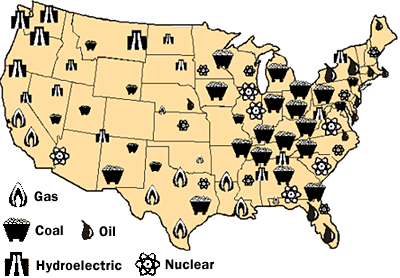

CORRECT!
The mortality rate in deaths/kiloWatt-hour in the United States for Coal Power plants is 10,000 while that of Natural Gas is 4,000. It is followed by the hydroelectric power plants with the mortality rate being 5 and the lowest for Nuclear Power plants at 0.1. https://en.wikipedia.org/wiki/Energy_accidents
The Nuke Quiz #3
Question 1
Which of the following energy sources offers the highest mortality rate in the United States?
